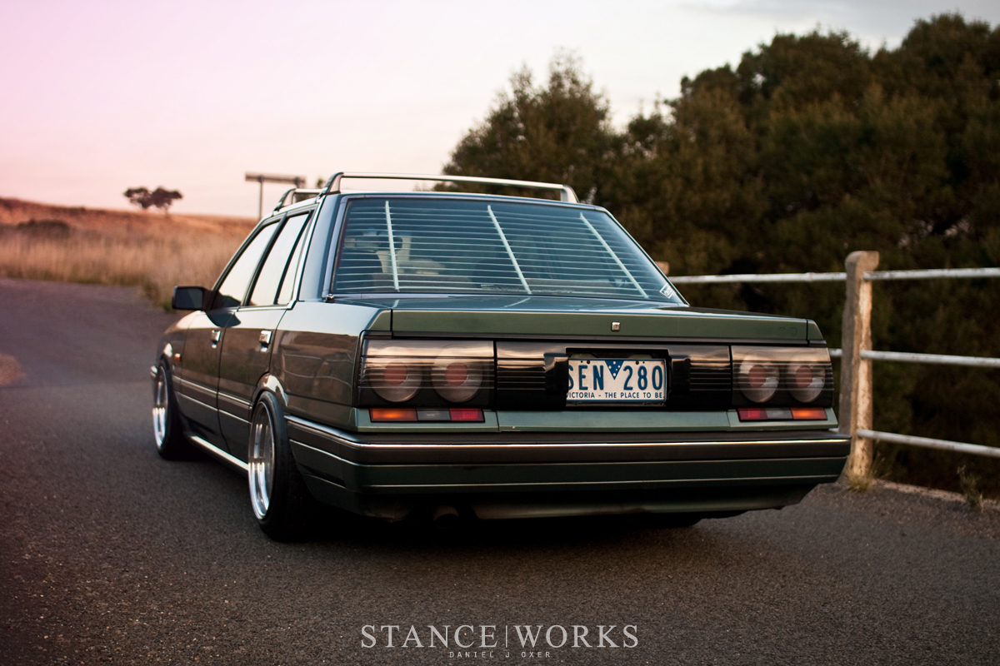

R31 Nissan Skyline GTS-R
The ultimate version of the R31 was the RB20DET-R powered HR31 GTS-R Coupe of which 800 units were built to allow homologation for Group A Touring Car racing. Introduced in late 1987, it had a reworked version of the normal RB20DET with a much larger turbocharger on a tubular steel exhaust manifold, as well as a much larger front-mounted intercooler boosting power to a factory claimed 210 ps (154 kW), with racing versions making over 430 hp (321 kW) in Group A trim.
Car Sales Pricing
